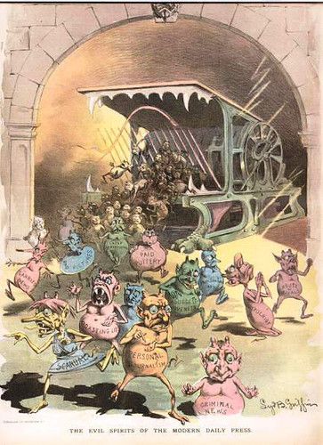
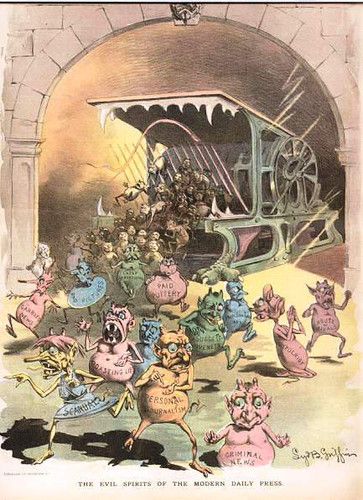

Scriptie
Janine Terlouw
2014
Consumeren, in het tijdperk van sociale media, wij de beelden of consumeren de beelden ons?
In hoeverre heeft het consumeren van beelden op sociale media effect op de mens?
Welke effecten heeft het consumeren van (veel) beelden op de mens?
V Voorwoord
IN Inleiding
H1 We kijken graag
H2 Moet je dit zien!
H3 Wat komt er nog meer?
C Conclusie
Noten
Bibliografie (bronnen)
Abstract
500 woorden engels
Appendix (eventueel)
Sociale media als brandend haardvuur.
Mijn ouders hebben sinds kort een open haard. Het is een knus en fijn gevoel om bij de haard te zitten en oneindig te kijken naar hoe het haardvuur danst. Ook tijdens gesprekken gaat mijn ogen al snel richting de haard. De vlammen verleiden mij tot het eindeloos staren. Het knispert en het klapt. Je hoopt dat je vader er nog wat nat hout op gooit, want nat hout zorgt voor hardere en onverwachte klappen. Ook bepaalde soorten hout doen het erg goed in het haardvuur. Het laminaat om de haard is op sommige plekken al beschadigd, maar hoe erg is dat? Het haardvuur zorgt voor eindeloos vermaak.
Het regent hard en zit als een verzopen kat in een lege bus terug naar huis. Het is pikdonker er valt niets te beleven in de 20 minuten durende busreis. Automatisch scroll door talloze beelden op mijn tijdlijn.
NOTES[a]
Waar ik ook ga of sta, in een restaurant, de bioscoop of zelfs een openbaar toilet, overal zie ik mensen die een apparaatje in de hand houden waarmee ze bijna alles kunnen doen wat ze thuis ook via de computer met internetverbinding kunnen doen. Dit apparaat, wat wij een smartphone noemen, is voor velen een obsessie geworden. Met dit apparaat zijn we continue in connectie met het internet. Het internet, met betrekking tot sociale media, geeft ons duizenden beelden per dag. Dit zijn beelden van je buurvrouw met haar hond, een selfie van je beste vriendin, een pasgeboren baby of ietwat gruwelijke beelden uit de oorlog in Syrië. Waar vroeger dit alleen in de openbare ruimte en op onze tv plaatsvond, vind dit nu elk moment van de dag in je broekzak plaats. We staan er mee op, gaan er meer naar ons werk, nemen het mee naar het toilet en gaan er vervolgens weer mee naar bed.
We blijven maar staren naar het digitale haardvuur. Wat speelt daar zich af? Wat zien we daar? En sterker nog: welke lichamelijke en geestelijke effecten heeft het op ons? Daarnaast ben ik benieuwd naar wat het maakt dat we blijven staren. Welke manipulatie speelt zich af op sociale media? Omdat de technologie zo snel gaat ben ik benieuwd wat een mogelijk toekomst beeld zou kunnen zijn.
QUOTES
NOTES[d]
STRUCTUUR[e]
Misschien komt het bij jou ook bekend voor, staren naar je scherm en maar niet kunnen stoppen met scrollen door een eindeloze tijdlijn van beeld. Of je blijft elke keer maar weer terug gaan om te kijken. Waarom kijken we zo graag? En waar kijken we dan naar? Als laatste wil ik weten welke effecten heeft dit op een langer termijn.
Waarom kijken wij zo graag?
Het menselijk brein is visueel ingesteld. Bijna 50% van de hersenen is gericht op visuele verwerking. 70% van je zintuiglijke receptoren zitten in de ogen. Uit onderzoek blijkt dat mensen maar 10% van wat ze lezen onthouden. Van wat ze horen onthouden ze 26% en van wat ze zien onthouden ze 30%. Uit een studie bleek dat 95% van de deelnemers beter in staat was om complexe medische informatie te begrijpen wanneer er zowel tekst als foto’s werden gebruikt bij de beschrijvingen, in tegenstelling tot degenen die enkel tekst voor zich hadden. In minder dan een tiende van een seconde krijgen we een gevoel bij een visuele gebeurtenis.[1]
Het ontwikkelen van het visuele brein begon bij onze verre voorouders die leerden te overleven met behulp van het visueel waarnemen van hun omgeving. Visuele ontwikkeling was essentieel bij het communiceren en overleven van de mensen. Door de visuele waarneming konden wij gevaar en onze medemens herkennen. We communiceerden door gelaatsuitdrukkingen. Om te overleven hadden we ten eerste elkaar nodig, gezichtsuitdrukkingen zijn daarom erg belangrijk. Psycholoog Albert Mehrabian zegt dat 93% procent van de communicatie non-verbaal is. Hij stelt in zijn Silent Messages-onderzoek[2] dat non-verbale elementen van communicatie voornamelijk van belang zijn bij het uiten van je gevoelens. Het lijkt er op dat mensen de neiging hebben om meer aandacht te besteden aan en te vertrouwen op de toon van een stem en visuele signalen, dan op gesproken woorden.
Waarom kijken we zo graag naar sociale media? Dat heeft met verschillende zaken te maken. Sociale media is overal toegankelijk en is gebruiksvriendelijk, onze zintuigen worden geprikkeld door visueel aantrekkelijk materiaal en het geeft ons een gevoel van anonimiteit, aangezien niemand ons kan zien. Laten we niet vergeten dat (bijna) iedereen[3] makkelijker te bereiken is via dit platform. Mensen kiezen ervoor bepaalde media of technologieën te gebruiken omdat die systemen en hun inhoud overeenstemmen met hun gevoelens, verlangens, waarden of overtuigingen.[4]
We gaan ook nog eens vaak naar sociale media websites. Verschillende bronnen geven verschillende uitkomsten hierover. Dit artikel zegt dat we 14 keer per dag naar Facebook gaan. Het boek iDentity van Larry D. Rosen geeft ons een tabel die zegt dat 36% van de Net Generation (gevarieerde leeftijd van 11 tot 30 jaar) zijn of haar Facebook elke 15 minuten controleert[5]. Het controleren van sociale media is natuurlijk iets anders dan de daadwerkelijke tijd die we er aan spenderen. Ook hier zijn verschillende onderzoeken over gedaan en verschillende uitkomsten uit. Amerikanen zouden totaal 230,060 jaren op sociale media zitten per maand. Dat is gemiddeld 6,5 uur per week[6].
Het is natuurlijk voor iedereen verschillend hoeveel tijd we aan sociale media besteden, daarom heb ik mijn eigen gegevens[f] bijgehouden, zodat ik vanuit mijn eigen interesse een goed beeld krijg van mijn internet gedrag. Voordat ik Facebook de-activeerde ging ik, als ik de computer een hele dag gebruikte, 40 keer per dag naar Facebook. Facebook stond vaak op de achtergrond open, ergens tussen mijn tabbladen. De chat was altijd actief. Voordat ik in slaap val, kijk ik vaak op mijn telefoon, scrollend door sociale media zoals Reddit of Instagram. Ik val letterlijk met mijn telefoon in slaap. Voordat ik mijn bed uitstap kijk ik ook vaak naar alle notificaties, en soms blijf ik in bed liggen om even ‘lekker wakker te worden’. Ik kijk per dag meer dan 50 keer op mijn telefoon. Soms kort, soms lang.
Wat zien we daar?
NOTES[g]
Wat zien we dagelijks op het internet?
Wat zijn de effecten van het zappen door beelden van je vriendin, je buurvrouw, de oorlog in syria?
Dagelijks hebben we de kans meer dan duizenden beelden langs te gaan op sociale media. We scrollen langs beelden van onze omgeving, maar ook van onze
Vroeger waren er iconische beelden. maar het het gevoel dat
Als ik het zou hebben over de oorlog in Vietnam is er een beeld wat te boven schiet. Het naakte meisje, rennend met armen gespreid richting de fotograaf, die enkele momenten geleden is getroffen door een napalm. Dit is een iconische beeld en staat opgeslagen in ons collectief geheugen. Maar zijn er nu nog beelden van deze tijd die zo iconisch zijn als toen?
Vroeger was er een beperkte keuze aan media waaruit je informatie en beeld kon halen. De krant was een van de eerste media waar beeld zichtbaar werd voor het grote publiek. De foto die op dat moment in de krant zichtbaar was, werd als waarheid gezien. Je was voor of tegen, links of rechts, het was letterlijk zwart wit.[7] Tegenwoordig is er zo veel informatie die je uit verschillende hoeken vandaan kunt halen. [hier nog iets meer]
Als ik het zou hebben over de Arabische lente, welk beeld is iconisch voor die oorlog? De foto’s van de slachtoffers? De rellen op het Thahir plein? De bom die alle voorpagina’s van de kranten haalden? Dit beeld is nog niet gevormd. Heeft het te maken met tijd? Heeft het te maken met al die verschillende beelden? is er een beeld wat nog niet emotioneel genoeg is? of zijn wij gewoon afgestompt?
Het feest van de herkenning. Collectieve beelden spreken ons meer aan. want we herkennen de composities van het oude beeld in het nieuwe beeld. Een goed voorbeeld hier van is de poster van Shepard Fairey, die een illustratie afbeeld van Obama en het woord “hope”. Het beeld werd zeer snel gezien als een iconisch beeld, en een van de meest herkenbare posters van de Obama campain. Laura Barton, schrijver in The Gaurdian, legde de link meteen met het iconische beeld van Che Guevara, een beeld dat overal te zien is op t-shirts, koffiemokken en posters van studentenkamers.
[bron] [bron]
[moderne beelden: youtube video’s? internet culture?]
We are paradoxacly drawn towards some pretty repuslive things.
its disturbing, but facinating. car accidents, car chasings, the possiblity of a crash or a fight or a natural disaster. Not the ones that hurt anyone, but one’s dat exciting. celeberty scandal, drama, disfiguration, true crime, war and gore. The macabre. We often feel guility in watchings these sorts of things, after all they are unpleasant. but yet we cant look away.
Waarom kijken we hier naar? Er is niet een bepaalde reden voor, er zijn meerdere redenen aan verbonden. Kijken naar mensen die vieze dingen, hete papers, een lepel kaneel eten of nog heftigere video’s zoals ‘fail-compilaties’ lijkt heel raar om te doen, maar we zijn gewoon heel te nieuwsgierig. We vinden nieuwsgierigheid vaak minder fijn, dan onaangename zekerheid. Dus dan maar kijken. En als we dan kijken, dan weten we hoe het afloopt.
there is a neurological basis on exploring in the face of danger. we become more attentive and allert when we are frightend. neurotransmitters like dinetje en dopamine
het is schrikbarend en fascinerend tegelijkertijd
https://www.youtube.com/watch?v=ZbdMMI6ty0o&list=UU6nSFpj9HTCZ5t-N3Rm3-HA
conclusie:
het is nog net helemaal duidelijk hoe beelden opeens iconisch worden, maar het heeft er wel mee te maken hoe vaak het heeft moeten herhalen voordat het iconisch wordt. of het moet plotsklaps gebeuren.
We willen meer, meer, meer!
Waar we vroeger langs verschillende televisie programma’s zapten, zappen we nu door onze status updates. Zappen is nu een stuk sneller geworden. In plaats van dat we de krant lezen met grote, inhoudelijke artikelen lezen we nu het nieuws zo kort als een twitter bericht. Het zappen nu lezen we een korte, of een deel van die korte tekst. We zappen langs visuele beelden, zonder die soms compleet te studeren, hebben we al een idee van wat er gebeurt. Het lijkt wel alsof mensen snakken naar kort, alsof ze zo efficiënt mogelijk zo veel mogelijk informatie willen vergaren.
Vergelijk het met een zak chips. Als er een schaal chips voor je staat op tafel en je neemt een chipje, zal het daarna nooit meer bij een chipje blijven. De smaak van dat ene chipje was zo heftig, dat je na een aantal seconden weer meer wilt hebben. Dit komt door de vele zout wat er op chips bevind, zout is erg verslavend. Dit gebeurt ook als je door je tijdlijn heel scrolt. Beeld, na beeld, na beeld je kunt maar niet stoppen.
De zout in chips is de dopamine in je hersenen. Dopamine is een stof die je plezier en genot laat voelen, en daarom motiveert het je om bepaald gedrag te vertonen en dingen te willen zoals voedsel, seks en drugs. Recent onderzoek toont ook aan dat dopamine er voor zorgt dat je dingen wilt hebben, verlangens hebt, bepaalde dingen wilt weten of zoeken. Het verhoogt het niveau van opwinding en maakt je gedrag doelgericht. Vanuit evolutionair standpunt dit is van cruciaal belang. Het dopamine systeem houdt je gemotiveerd om te leren en te overleven. Het gaat dus niet alleen om lichamelijke behoeften zoals voedsel, of seks, maar ook over abstracte concepten. Dopamine maakt je nieuwsgierig naar ideeën en laat je zoeken naar informatie.[8]
Net als chips ‘makkelijk’ eten is, is sociale media ook erg makkelijk. Met het internet en sociale media heb je onmiddellijke voldoening als het gaat om het zoeken. Even een bericht sturen? zo gedaan. Even informatie opzoeken? ook zo gedaan. Nieuwsgierig naar wat je beste vriendin aan het doen is? Het ligt allemaal aan je voeten. Zo is het makkelijk om in een dopamine-spiraal te krijgen. Dopamine laat je zoeken, beloont je voor het zoeken en zul je vervolgens meer laten zoeken. Het wordt moeilijker om te stoppen naar het kijken van beelden, als je er eenmaal aan begonnen bent.
Hoe korter het bericht, hoe verslavender het werkt. Twitter is daar een goed voorbeeld van, je hebt maximaal 140 tekens in een bericht. Het dopamine systeem is net niet tevreden bij het vergaren van korte berichten, dat je alleen maar meer data zult consumeren om je brein te voeden. Ook onverwachte zaken (zoals notificaties) geven een grote dopamine kick.
[Coolidge effect][h]
Conclusie:
het antwoord dat ik zoek:
de impact van beelden op je tijdlijn zijn minder groot omdat het afgevlakt wordt door de beelden eromheen. de beelden op de voorkant van de krant zouden veel meer impact kunnen hebben. We hebben het ook al te vaak gezien.
Dus we worden afgestompt. maar ondertussen hebben we nog steeds behoefte aan visuele sensatie voor ons brein.
We worden dommer, door dat we geen inhoudelijke stukken meer lezen. maar dat is speculatie. en is zeker niet toepasbaar op iedereen
http://www.kennislink.nl/publicaties/brein-wapent-zich-tegen-afleiding
Ook al weet ik dat iedereen een product is een wordt gebruikt en gemaakt door internet en zijn beelden. Doe ik het zelf ook, en kan ik mijzelf daar onmogelijk geheel van af sluiten.
Door het consumeren van beeld wordt onze mening gevormd.
[onbewust of bewust? vroeger was de input van beelden universeel, tegenwoordig hebben beelden een individuele werking, niet iedereen ziet dezelfde beelden] Eline
Welke effecten heeft dit op ons?
Het is fantastisch om een smartphone te hebben. Je kunt zo, op elk moment van de dag, informatie vergaren. Je hoeft nooit meer naar een NS bord te kijken, dit doe je gewoon wandelend naar het station toe. Super efficiënt. Wat veel mensen niet weten is, dat hun toestel hen ook kan opzadelen met een verontrustend gevoel. Zij moeten gewoon hun smartphone checken. Mensen maken zich zorgen om de over gemiste berichtjes als ze even niet bereikbaar zijn. Er zijn ook mensen die gestrest raken wanneer ze hun mobiele telefoon niet bij de hand hebben. Als we maar even onze smartphone niet bij de hand hebben bekruipt ons het knagende gevoel dat we misschien iets missen… of alles missen.
Het compulsieve gedragstype van de gedachten dat we iets missen, wordt ontwikkeld door verontrusting en obsessieve gedachten. MTV plakte een label op dit gevoel: FOMO, wat staat voor fear of missing out. De medewerkers van het televisie kanaal stuurden een enquête naar een groot aantal jongeren. Hieruit kwam naar voren dat 66 procent eens is met de stelling dat het vermoeiend is om online te zijn. De andere 58 procent verklaarde dat wanneer zij het niet zijn, zij zich zorgen maken dat ze iets zullen missen.[9]
Een procent van de Amerikanen leidt aan OCS (obsessief-compulsieve stoornis). OCS is een angststoornis die gekenmerkt wordt door ongewilde en herhaalde gedachten, ideeën en gevoelens (obsessies) die je laten denken dat je jezelf een bepaald gedrag moet aanmeten (compulsies). Een belangrijk eigenschap van de OCS is dat deze obsessies of compulsies het dagelijkse leven zwaar verstoren en verontrusting veroorzaakt. Het lijkt weinig, maar 90 procent van de amerikanen heeft diezelfde kenmerken. Het is niet zo heftig dat het tot de OCS-stoornis behoort, maar wel heftig genoeg om deze met een e-stoornis te benoemen.[10]
Verschillende onderzoekers, onder wie David Levy, een professor aan de universiteit Washington hebben gesuggereerd dat wij een 'popcorn-brein' hebben - hersenen die zo gewoon zijn aan de constante stimulatie van het multitasken met elektronische toestellen dat ze niet meer kunnen omgaan met het echte leven, wat veel minder stimulerend is. Zij die meer dan tien uur per dag online doorbrengen, minder grijze materie in hun hersenen hebben dan wie minder dan 2 uur per dag doorbrengt.[11] De grijze stof heeft als functie het verwerken van informatie, terwijl de witte stof de communicatie tussen de zenuwcellen verzorgt.[12]
Clifford Nass, a social psychologist at Stanford, says studies show multitasking on the Internet can make you forget how to read human emotions. When he showed online multitaskers pictures of faces, they had a hard time identifying the emotions they were showing.[13]
Iemand met een e-stoornis of popcorn-brein zal regelmatig zijn telefoon bekijken, om te kijken of hij al nieuwe berichten binnen heeft. Als hij thuis is zal hij regelmatig zijn Facebook pagina controleren - om van zijn obsessieve gedachten af te komen. Dit gedrag geeft ons enkel maar een tijdelijke verlichting. We zullen na een korte tijd weer Facebook moeten checken of er geen nieuwe berichten zijn.
Naast het hebben van geestelijke effecten, heeft overmatig smartphone gebruik ook effect op je lichaam. Laatst was ik op een feestje en praatte ik met iemand over het gebruik van onze telefoons. Plotseling zei hij: “Ik had een keer mijn telefoon in mijn hand, en toen voelde ik hem trillen in broekzak” waarop we erg hard moesten lachen om deze bizarre situatie. Spijtig genoeg heb ik ook de illusie dat mijn telefoon trilt in mijn broekzak. Deze trillingen hebben zelfs een naam: Fantoomtrillingen. Michael Rothberg heeft een onderzoek gedaan wie de fantoomtrillingen nog meer heeft gevoeld in zijn Medische Centrum. 70 procent van het personeel heeft aangegeven dat zei dit weleens hebben gevoelt. De analyse van de onderzoekers gaf aan dat de frequentie waarmee iemand zijn of haar telefoon gebruikt. Hoe vaker je je smartphone gebruikt, hoe vaker je fantoomtrillingen zal ondervinden.[14]
Soms pakje gewoon je telefoon, ontgrendelt, scrolt 2 keer naar rechts en vervolgens weer naar links. Je vergrendelt hem weer, en stopt hem vervolgens weer in je broekzak.
[Over het onbewuste checken van je telefoon, dat vindt zich plaats in de hersenen en heeft een bepaalde naam.] Dissociatie
Als ik aan het werk ben aan mijn bureau zie ik soms een flikkering in mijn ooghoeken. Mijn brein zegt: “HÉ JE HEBT EEN SMSJE!” Maar helaas was het gewoon een weerspiegeling van de lamp op een glimmend oppervlakte.
De telefoon heeft voor ons vele voordelen, maar ook een erg beangstigend en benauwend gevoel. Het zou op sociaal gebied negatieve invloeden kunnen hebben, als iemand niet snel genoeg op je bericht reageert bijvoorbeeld. Het vergeten van je telefoon zou zou je hele dag kunnen verpesten, want hoe ga je je zelf vermaken in de trein?
[Conclusie: Je zou kunnen concluderen dat de het lichamelijk verslavend is.]
[Begrip en onbegrip tegenover elkaar]
updates, heb ik nog updates?
drang naar informatie. dwangmatig checken van mobiele telefoon. niet los durven laten.
Het internet omgeving waar de hele wereld tot je beschikking is het is een omgeving waar je kennis met elkaar kun uitwisselen. Het is een wereld waar mensen data uitwisselt met elkaar. Wat we soms vergeten is dat alles wat zich op het web bevind gemanipuleerd is. Het internet is een spiegel van de werkelijkheid. Het enige is dat de virtuele spiegel een gemanipuleerd beeld van de werkelijkheid geeft.
[STRUCTUUR][i]
We worden gemanipuleerd
We hebben eerder gelezen dat we tijdens het kijken van beeld of het lezen van korte berichten dopamine aanmaakt en daardoor meer verslaafd raken. Sociale media verleidt ons door naar korte berichten te kijken en door talloze beelden te zappen. Als jouw tijdlijn dagelijks vol staat met saaie en grauwe informatie, zou je stoppen met kijken. In plaats daarvan laat Facebook je de meest extreme gebeurtenissen in je sociale netwerk om de meest eenvoudige reden: De meest extreme gebeurtenissen trekken de meeste aandacht. Dit is waarom je sinds een tijd je tijdlijn geen echte tijdlijn meer is. Het is gewoon niet meer gebaseerd op tijd, maar op wat Facebook denkt wat jij het meest interessant zou kunnen vinden.
Alles op sociale media draait om jou zo lang mogelijk er te laten houden. Facebook heeft sinds kort een nieuwe functie toegevoegd: Automatisch afspelende video’s. Super handig, zul je denken, want het scheelt ons weer een klik minder. Ondertussen worden we gemanipuleerd in het kijken naar beelden die we misschien helemaal niet willen zien. Net als het haardvuur, zijn we direct gefixeerd op dit bewegende beeld, en stoppen (ook al is het maar voor een milliseconde) met scrollen.
youtube heeft een bubble. jongen die alles liked.
Ook terug zien in
Beelden en headlines knallen door je beeldscherm. Je wordt overdonderd door teksten als: “Look at this 5-year-old selling lemonade at the street, you won’t believe what appens next” “Baby That just looks like Jay-Z” etc. Je wilt er niet aan toegeven, maar het is zo intrigerend, dat je er wel op moet klikken. Je klikt, en tien minuten later heb je spijt dat je heb geklikt, omdat je je immers aan andere taken had bezig moeten houden. Maar waarom kijken we ernaar als we weten dat het ons geen goed doet / we toch alleen maar voor de gek worden gehouden?
Clickbait (de Engelse term voor in het oog springende koppen die de internetter verleiden om op een linkje te klikken) is niet iets van deze tijd, het is al meer dan 100 jaar aanwezig. We komen het al tegen sinds de krant bestaat. Hier zien we een politiek cartoon uit 1888, genaamd “The Evil Spirits of the Modern Day Press.” In deze afbeelding zien we dezelfde “kwaden” die sociale media zogenaamd heeft uitgevonden de afgelopen 10 jaar. Er zijn duiveltjes afgebeeld met de teksten: “payed puffery”, wat gelijk is aan betaalde content. Er zijn “bad images” die LOLcats zouden kunnen zijn. Ook is er "personal journalism," "scandal," "criminal news," "garbled news," and "boasting lies." Deze zien we, net is anders geformuleerd, allemaal terug op onze dagelijkse tijdlijn.[15]
The Evil Spirits of the Modern Day Press - Puck cartoon of Nov. 21, 1888
Deze misleiding noemde men in die tijd Yellow Journalism. Die term komt van een gele strip die gepubliceerd werd in de New York World, toen de kranten in de 19er jaren moesten overleven, en op deze manier meer verkochten. Nu noemen we dit clickbait en is sociale media op zoek naar meer unieke bezoekers per dag.
Waarom blijven we er op klikken en waarom is het zo moeilijk om er niet op te klikken? Deze titels spelen perfect in op de nieuwsgierigheid van de mens. Studies hebben aangetoond dat nieuwsgierigheid een cognitieve vorm van het bewust worden dat je iets niet weet. En als weet dat je die achterstand hebt, ga je er zo veel mogelijk voor doen het wel te weten te komen.[16] Een professor en een communicatie-medewerker van BI Norwegian Business School in Oslo, Noorwegen, stelde een onderzoek waarin ze declaratieve titels vergeleken op Twitter en op een Noorse Ebay. Ze ondervonden dat titels die luidde als een vraag gemiddeld 150% meer aangeklikt werden. Wanneer de titels luidde als een vraag, en een naar zichzelf verwijzend woord bevat zoals “u”, wordt er zelfs 175% meer geklikt.[17]
De reden dat we er op zullen klikken heeft ook te maken met de
De reden dat je niet anders kan dan op clickbait klikken is simpel: Het prikkelt je nieuwsgierigheid en de nieuwsgierigheid wordt alleen maar sterker als het wordt gesteld als een vraag, of als jij er persoonlijk in aan gesproken voelt. Maar nu we dit weten, maakt het ons nog niet resistent tegen clickbait. Clickbait zal atijd blijven bestaan. De keuze is alleen aan jou of je er op klikt op niet, en je moet je er van bewust zijn dat het gebeurt.
We manipuleren elkaar
Als jij in je pyjama, op de bank, kijkend naar jouw persoonlijke digitale haardvuur, denkt dat het niemand iets aangaat, dan heb je het mis. Het is niet meer het geval dat er een paar elites de media regeert en dat wij passieve ontvangers zijn. Wij creëren alles wat er op internet komt te staan, door te bloggen, tweeten en onze statussen te delen. We bepalen wij ook wat we zien en wat we belangrijk vinden. Dat is niet alleen door te liken of te delen, maar juist door te klikken. Wij bepalen wat de aandacht krijgt, gebaseerd op waar we onze aandacht aan geven. Er zijn verschillende algoritmes die bepalen waar we meer van zullen zien gebaseerd op de dingen die we aanklikken. Klikken is stemmen, klikken vormt onze hele cultuur.
Het lijkt allemaal alsof het al te ver is gekomen, en we geen weg terug is. Klopt. Het internet staat vol met misleidende titels en beelden, maar dat betekend niet dat je jezelf er aan moet overgeven. Als je Kim Kardashian echt een verschrikkelijk persoon vindt, en je wilt er niet mee lastig gevallen worden: stop dan met het klikken media dat te maken heeft met Kim Kardashian. Probeer je zelf af te sluiten voor dingen die je niet wilt zien. Bespaar jezelf en een ander voor dit feit. Als je weet dat meeste stemmen gelden, stem dan bewust.
"NOBODY DISPUTES THAT SOMETHING'S IMPORTANT IF IT'S ON THE FRONT PAGE OF THE NEW YORK TIMES" - quote in een artikel geen idee waar het vandaan komt.
conclusie alles:
Ik heb om mij heen vaak gehoord dat “je het toch kan uit zetten, als je je er aan stoort.” Nee, daar gaat het nu precies niet om. Het gaat om het aandringen van beelden waar je helemaal niet op zit te wachten. En dat gaat soms heel opdringend, zoals automatisch afspelende video en schreeuwende titels, maar soms ook heel sneaky, zoals persoon gerichte advertenties en misleidende titels.
Facebook: het perfecte haardvuur.
Nu we bewust zijn van clickbait. gaan we eens kijken naar onze facebook tijdlijn. Wat is hier gaande? Denk je dat alle wat je ziet direct van jou vrienden is? Of laat facebook alleen berichten zien dat facebook wil dat jij ziet.
Voorbeeld: De jongen die alles liked [link]
Like heeft een waarde gekregen. Je kunt iets liken of niet. Het kleine onderzoek wat ik heb gedaan met de sjaal had men het vaak over “niet leuk genoeg.” Dus wanneer is iets leuk genoeg? en als het leuk genoeg is, plak je je er je like op, alsof het een soort valuta is. Je like erop plakken is ook een teken dat je jezelf ermee associeert, en dat je het niet erg vind als je naam erbij komt te staan.
This has drastic effects not only on our perceptions of society as a whole, but also on how we perceive our personal lives.
If it seems like “everybody” is getting married or having kids or having amazing trips around the world or doing something cool and fun and sexy, it’s only because we are exposed to these events in disproportionate numbers. It’s not that everyone is having amazing life experiences all the time, it’s that we’re always shown people’s amazing life experiences all the time. As a result, many of us begin to feel a constant gnaw of somehow “missing out” when really, we just have a heavily-biased perception of what’s going on in our peers’ lives.[18]
“Today, we don’t need propaganda machines to deceive us because we can make hypocritical and self-manipulating choices ourselves just by “liking” the pictures that show us what we want to see and ignoring those that are more awkward.”[19]
Dit alles lijdt oa tot sociale onzekerheid
Films, reclames, magazines, videoclips en andere media geven allemaal een vertekend beeld van de werkelijkheid. Ieder beeld is gemanipuleerd. Ook al zijn we bewust van dit feit, we zijn na al die jaren nog steeds niet resistent. We kijken graag om ons heen, en vergelijken ons met een werkelijkheid die niet bestaat.
[ herschrijven naar eigen woorden en in volgende alinea’s verwerken]
Toename van het aantal gevallen van boulimie en anorexia nervosa, vooral bij jonge vrouwen, gaat hand in hand met de toename van het media- en technologie gebruik. De onderzoeken naar eetstoornissen werden pas dertig jaar geleden opgestart, ongeveer gelijkertijd met de onderzoeken naar de psychologische, fysiologische en de sociologische effecten van de technologie. De meeste wetenschappers zijn het erover eens dat de technologische vooruitgang en de voortdurende focus van de media op schoonheid en slankheid in de belangrijke mate hebben bijgedragen aan de stijging van het aantal gevallen. De televisie werd altijd beschouwd als de hoofdverdachte. Maar ook het internet en sociale media hebben hier schuld aan omdat wij 24 uren per dag en 7 dagen er week geconfronteerd worden met schoonheidsidealen.[20]
[ er is hier zelf een disorder die daar genoemd is]
Minder extreem is de verstoorde lichaamsbeweging (BBD of body dismorphic disorder) is een minder erge aandoening die over het algemeen geen fysieke problemen veroorzaakt. Ze houdt echter wel verband met anorexia en boulimie en psychologisch kan de impact ervan heel zwaar zijn. Zowel mannen als vrouwen lijden aan deze stoornis. Het is natuurlijk volkomen normaal dat iemand zijn uiterlijk verzorgt, maar mensen die aan BDD lijden besteden hier abnormaal veel aandacht aan en maken zich voortdurend zorgen om hun uiterlijk en overkomen.[21] De symptomen hiervan zijn o.a.: verontrustend gevoel, obsessie met het uiterlijk, waangedachten en overtuigingen, denken aan zelfmoord, laag gevoel van eigenwaarde, verlegenheid, denken dat andere spotten met het lichamelijke gebrek, perfectionisme.
Naast dat wij ons vergelijken met de onwerkelijkheid die we dagelijks zien op televisie, op billboards en andere media. Blijkt het gevaar veel dichterbij te zitten. We worden ook sterk beïnvloed door mensen om ons heen. Hoe vaker ze naar selfies en andere foto’s op sociale media kijken, des te negatiever worden ze over zichzelf, blijkt uit onderzoek dat is uitgevoerd door Britse en Amerikaanse wetenschappers. Het is het eerste onderzoek dat een verband legt tussen sociale media en een slecht zelfbeeld. De 881 studentes die voor het onderzoek werden ondervraagd, moesten antwoord geven op vragen over hun Facebook-gebruik, hun eten en hun sportieve activiteiten.[22] We worden beïnvloed door de statusupdates van mensen om ons heen. Realiseer dat de statusupdates maar een beperkt beeld geven van dat persoon, namelijk het beeld wat hij of zij wil laten zien van zichzelf, en dat is uiteraard het beste beeld in zijn of haar ogen. Onze vrienden geven een gemanipuleerd beeld van hun leven. En wij vergelijken ons - wederom - met een vertekend beeld.
[foto sjaals]
De sociale onzekerheid visualiseer ik in het project van Nina Stottrup Larsen, docent ontwerpen aan de KABK. De opdracht luidde: “image as Evidence”. In deze opdracht heb ik het beeld niet als einddoel gebruikt, maar als startpunt. Ik ‘bewijs’, door de weinige likes die ik krijg, dat ik niet leuk ben. Ik postte een foto van mijzelf in mijn nieuwe appartement. Van de 200 vrienden hebben er maar 8 mensen mij bestempeld met een like. Na 24 uur vroeg ik aan alle mensen die niet een like hebben gegeven, waarom ze met niet hebben geliked. De uiteenlopende antwoorden: “Ik heb je foto niet gezien” “Ik vind hem niet spectaculair genoeg” “De foto is een beetje vaag” “Je staat er raar op” heb ik op een irrationele manier vertaald. Het eindresultaat is 7 meter lange sjaal en staat symbool voor het stikken in je eigen negatieve gedachten.
Een vriendin van me sprak me hier op aan. “Ja daar zit ik ook vaak mee. Ik ben soms bang iets te uploaden, omdat ik misschien geen, of niet genoeg likes krijg. Daarom laat ik het vaak maar zitten.” De waarde van likes is zo hoog dat het bepaald wat wij op sociale media met elkaar delen. We geven een afgevlakt beeld van onszelf op internet, een beeld wat volgens de norm is. Een beeld wat we willen zien, en wat van ons verwacht wordt. Als we nep zien, gaan we nep doen.
waarom we blijven kijken:
http://jalopnik.com/5786783/why-are-we-so-captivated-by-car-crashes
http://www.seomarktplaats.nl/seo_blog/overige-blogs/5-natuurlijke-redenen-waarom-video-werkt/
https://www.youtube.com/watch?v=ZbdMMI6ty0o
niets is gratis.
je betaalt met je aandacht. en wordt daar in gemanipuleerd.
In de vorige hoofdstukken hebben we gezien social media werkt en hoe verslavend dat is voor ons.
Zappen op onze telefoon wordt met de dag makkelijker. Processoren worden sneller en onze beeldschermen worden groter. Technologie zorgt er voor dat we sneller, en gemakkelijker informatie kunnen vergaren.
toekomst aantonen door deze projecten:
Suzanne LaBarre (2014) Oversharing Toys Let Your Baby Post On Facebook. Fastcodesign
Dumbphone. smarthone wat niets kan.
Weten we straks nog wat echt of nep is ? Iedereen wordt schizofreen. Ga in een computer leven.
How social media will trick you more in to stuff so it will get more attention.
Als het neppe echt wordt
Vroeger zag ik social media als een grap. Beetje online keten. Nu neemt iedereen het super serieus. Waarom heb je geen facebook? waarom staat je relatiestatus op “its compicated?” je hebt toch een serieuze relatie? Dit vragen mensen aan mij blabla
Je hebt Facebook niet meer in controle, het heeft jou in controle.
de aantrekkingskracht van technologie (pagina 88 iDentity)
technologie gaat gepaard met het gebruik van de consument. mensen willen nieuwe dingen en verbeteringen en dat soort dingen en dan gaan ze alle dingen doen en willen en verslaafd zijn jaaaa.
We leven in een wereld waar we vanuit de maatschappij geacht worden om productief te zijn. We worden gezien als individuen die acht zijn te streven naar doelen die we moeten of willen bereiken. Daarnaast leven we in een wereld die ons de kans geeft om ons te ontwikkelen op de manier die we zelf willen. We hebben de vrijheid om ons eigen pad te kiezen, onze eigen doelen te stellen.
We zijn gek op die dingen en blijkbaar kunnen we niet zonder.
(denk google glass, denk advertenties in je droom) voornamelijk visueel gericht. we hebben gezien dat dit en dit, in de toekomst zou mogelijk dit en dit kunnen gebeuren. ook: Toekomst als ontwerper. hoe kunnen wij als ontwerpers nog opvallen tussen al die beelden? Iedereen is ontwerper, iedereen heeft photoshop. Sneller kunnen handelen als ontwerper. etc.
http://www.npowetenschap.nl/nieuws/artikelen/2014/Juni/Wij-zijn-onze-computers.html
http://www.extendlimits.nl/nieuws/artikel/mens_2.0_angstig_toekomstbeeld_van_mensheid_en_technologie
Smartfridge. Je koelkast bepaalt wat er in huis komt.
Google Glass. implementatie digitale leven continue in je ooghoek.
What is real?
alleen maar meer beeld.
http://www.nu.nl/internet/3951307/youtube-test-maken-van-bewegende-gif-afbeeldingen.html
scrollen met je ogen
http://www.metronieuws.nl/plus/samsung-galaxy-s4-scrollen-met-je-ogen/SrZmco!fUGQYLqg27HM/
http://www.bright.nl/scrollen-met-je-ogen-op-de-galaxy-s4
gezichtsherkenning.
http://thecreatorsproject.vice.com/blog/facial-recognition-sees-you-as-a-pattern-not-a-person
http://en.wikipedia.org/wiki/Pareidolia
http://en.wikipedia.org/wiki/Apophenia
http://en.wikipedia.org/wiki/Face_perception
Advertenties in je dromen
(futurama)
Wat is de druppel?
Wat is de druppel die de emmer doet overlopen? Wanneer realiseren mensen zich wanneer het te ver gaat. En er dingen zouden moeten veranderen.
Voor mij was in zekere zin moeilijk om te stoppen met Facebook. Dan kan ik niet meer gemakkelijk met mensen praten, en mis ik de updates die op de KABK pagina staan. Maar daartegenover staat dat ik niet meer bewust of onbewust naar Facebook ga. Dat ik minder wordt afgeleid door mogelijke status updates van anderen. Dat als ik input wil, niet naar manipulatief middel gaat die je alleen maar bezig houd met automatisch afspelende filmpjes van een hond die kunstjes kan doen op een fiets. Als ik iets aan iemand te melden heb, dan bel ik hem wel, of stuur ik een berichtje. Ik hoop dat andere mensen dat ook naar bij doen. He dat is leuk voor Janine. oh maar ze heeft geen facebook meer, laatmaar. THIS IS NOT THE WAY! Vroeger wisten we van iedereen hun telefoon nummer uit je hoofd. Nu weten we iedereen hun achternaam. Maar het daadwerkelijke contact gegevens weten we niet meer. Omdat social media er een schil omheen zet.
Gewoon stoppen (herschrijven)
iedereen is nep. waarom ik gestopt ben met facebook. ik ga mezelf er soms mee vergelijken. ik deel dingen die er niet toe doen, of lees dingen die er niet toe doen. ik was verslaafd, elke dag ging ik ongeveer 25 keer naar facebook. [doormiddel van een tool op internet]
oplossing?
is er een oplossing? kunnen wij nog terug, moeten we de stekker eruit halen blabla.
Ja en nee. Vroeger was men bang voor het boek, omdat we dan onze geheugen zouden verliezen / alles zouden vergeten. we moeten leren er mee om te gaan.
Het internet is fantastisch het is super interessant wat technologie met je doet. en tegelijkertijd super scary.
Het is natuurlijk aan jezelf om te zeggen: ik doe het niet of wel, maar blaat.
Natuurlijk weet ik dat facebook one big joke is. Maar ondertussen neemt mijn tante het bloedserieus.
Het weten dat we slachtoffer zijn van manipulatie, maakt ons niet resistent voor de manipulatie. Maar ik denk dat als je bewust bent van dat je gemanipuleerd wordt, je het meer naar je eigen hand kan zetten. Of anderen bewustzijn geven. (OFZOIETS)
Als jullie me nu willen excuseren; Ik heb na het schrijven van deze scriptie nog heel wat kattenplaatjes te bekijken.
Ik ben niet hier om oplossingen te geven tegen dit probleem. Als je dat wilt hebben ben je niet op de juiste plek. Maar als ik je een tip mag geven: zet het uit.
PRULLENBAK:
Digifrenia
Het tegelijkertijd bevinden op meerdere plekken tegelijk noemt Douglas Ruskoff Digiphrenia. Digifrenia. de docent neem zijn ipad mee en beantwoord zijn laatste emails onder het avondeten. prive en zakelijk zijn gemixed. Maar ook oorlog is aanwezig in je huis (de mannen die drones besturen)
Eline Fresco stukje
Misschien kunnen we niet verder denken dan de zolderruit. Maar dat neemt niet weg dat we ons een beeld scheppen van wat ons omringt. Dat is wat Einstein zegt. Kunstenaars, wetenschappers, andere denkers en eigenlijk ieder mens: wij maken allemaal op onze eigen manier een voorstelling van de wereld, onze eigen kosmos, hoe fragmentarisch ook. We gebruiken en verwerken informatie van buiten die ons via onze zintuigen bereikt en via interne stimuli - gedachten, emoties, pijn - wordt omgezet in ideeën en concepten om de wereld te staven en invulling te geven en, heel belangrijk, te corrigeren.[23]
[1] http://www.dutchcowboys.nl/design/29851
[2] Silent Messages: Implicit Communication of Emotions and Attitudes – July, 1972 by Albert Mehrabian
[3] Facebook had 1,32 miljard gebruikers in juni 2014. Dat is 1/7 18% van de wereldbevolking. 1/7 mens
[4] iDentity, Hoofdstuk 8 (Je denkt alleen maar dat je sterft), pagina 178
[5] iDentity, Hoofdstuk 1 (Het e-syndroom) pagina 23
[6] http://www.cnbc.com/id/100275798#.
[7] KRO brandpunt 21 september
[8] http://www.psychologytoday.com/blog/brain-wise/201209/why-were-all-addicted-texts-twitter-and-google
[9] Taylor C. (29 april 2011). For Millennials, social media is not all fun and games.
[10] iDentity, hoofdstuk 3 (24 uur per dag 7 dagen op 7) pagina 67
[11] iDentity, hoofdstuk 12 (het zit allemaal tussen je oren), pagina 241-242
[12] http://nl.wikipedia.org/wiki/Grijze_stof
[14] iDentity, Hoofdstuk 3 pagina 72
[15] http://io9.com/a-history-of-clickbait-the-first-100-years-1530683235
[16] http://blog.hubspot.com/marketing/clickbait-conundrum-history-psychology-ethics
[17] http://www.forbes.com/sites/susanadams/2014/01/09/is-there-new-proof-you-will-read-this-article/
[18] http://markmanson.net/attention
[19] Jonathan Jones (2 december 2014).The touching hug photo from Ferguson protests is a blatant lie. The Guardian [link]
[20] iDentity, Hoofdstuk 9 (zie ik er niet te dik uit op mijn profielfoto?), pagina 186-187
[21] iDentity, Hoofdstuk 9 (zie ik er niet te dik uit op mijn profielfoto?), pagina 191
[22] http://www.telegraaf.nl/vrouw/actueel/22498079/__Sociale_media_maken_vrouwen_onzeker__.html
[23] Kruisbestuiving, boek van Eline
[a][Hier vergelijk ik de haard met de comfortzone van onze mobiele telefoon. Je kunt jezelf ook verliezen in het staren naar het haardvuur, zo doe je dat ook met je telefoon. Dit is waar de titel vandaan komt, dit is waar ik naar verwijs bij sommige stukken tekst.]
Verwijzen naar:
Net als het haardvuur werkt automatisch afspelende video’s als een magneet als het gaat om aandacht trekken. (video’s)
Gooi een beetje nat hout op je tijdlijn en kijk wat er voor sensatie ontstaat. (clickbait)
Een vonk is niet genoeg, voor een groot vuur heb je meerdere vonken nodig (dopamine in je brein) (eindeloos vermaak)
[b]Ten eerste wil ik weten waar we naar staren. en waarom.
Ten tweede ben ik benieuwd welke manipulatie er plaats vind zodat we blijven staren.
Ten derde wil ik weten hoe we in de toekomst verder, en hoe we er mee om moeten gaan.
[c]hoe we vroeger blootgesteld werden aan reclame in de openbare ruimte, gebeurt dit nu elke moment van de dag in je mobiele telefoon
[d][Korte introductie]
[tot welke groep richt ik me? er zijn ook heel veel mensen die zich er bewust van afsluiten.]
[duidelijk maken wat ik hier bespreek, en alinea’s aan elkaar laten aansluiten]
[e]1 Waarom kijken we zo graag?
En waarom naar sociale media?
2 waar kijken we naar?
vroeger: iconische beelden
nu: al die verschillende beelden, alles kort (zo efficiënt mogelijk weer nog meer informatie)
3 welke effecten heeft het op ons?
popcornbrein
verslaving
lichamelijk: fantoomtrillingen
[f]nog meer data?
[g]wat zien we? aantrekkelijke beelden, shockerende beelden.
duizenden beelden, wat doet dat met ons? weet ik niet
hoe was het vroeger? iconische beelden. collectief beeld.
Zijn er nu nog iconische beelden? youtube cultuur
ik vraag me af of it hele stuk wel nodig is
[h]Het vergaren van beelden zien we ook terug in dit experiment, genaamd het coolidge effect. In dit experiment zien we
Coolidge effect
Het coolidge effect geeft aan dat we dit en dit zien. dit is vergelijkbaar met onze tijdlijn. we zien zo veel beelden en we worden weer afgewezen, maar toch blijven we er naar kijken.
[i]Welke manipulatie vindt plaats op sociale media?
1 we worden gemanipuleerd
Bewegende beelden & schreeuwende headlines
leven in een blubble, (De jongen die alles liked.)
advertenties afgestemd op het persoon, (gezichten, bonuskaart )
2 we manipuleren elkaar.
Je denkt dat door sharen en liken we elkaar beïnvloeden, maar we beïnvloeden elkaar door te klikken.
De (perfecte) weerspiegeling van een ander op jezelf.